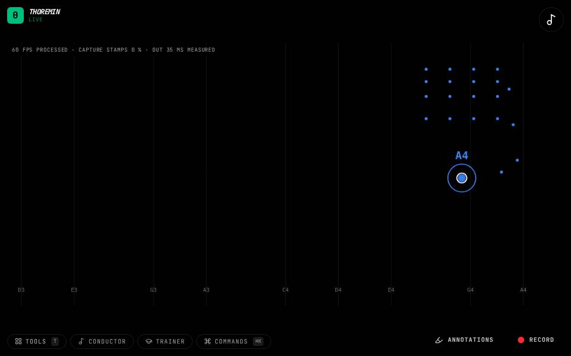

Instruments › Field instruments
Pitch Bender

What to do
- Play a note by moving your hand.
- Pinch the index finger toward the thumb to bend the pitch up.
- Release to let it spring back down.
A whole-tone bend upward under your fingertips, like a guitar string.
How it works
The distance between the index fingertip and the thumb is routed to pitch bend. A full bend is a whole tone, reached a little before your fingertip touches the thumb.
Its settings: Hand. Every knob: the manual.